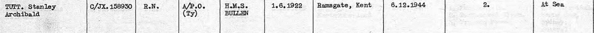
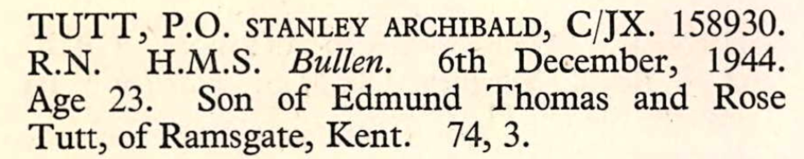

Stanley Archibald Tutt 1922 - 1944
[ Home ] | [ Calendar ] | [ Surnames Index ] | [ Errors ] | [ Family History ]The 6th of 7 children of Edmund Tutt (a bricklayer's labourer) and Rose Butler (a laundress), Stanley Tutt, the second cousin once-removed on the father's side of Nigel Horne, was born in Ramsgate, Kent, England on 1 Jun 19221,2. In 1944 he was serving in the military (regiment: Royal Navy; Rank: Petty Officer; Service number: C/JX 158930).
He died on 6 Dec 1944 in At Sea1,3,4,5 (HMS Bullen hit by U-Boat).
Parents
- Edmund Thomas was born on 9 Jun 1882
- Rose was born on 29 Feb 1884
Citations
- British Armed Forces And Overseas Deaths And Burials - Findmypast
- England & Wales births 1837-2006 - Findmypast
- Commonwealth War Graves Commission Debt Of Honour - Findmypast
- Find A Grave http://www.findagrave.com
- uboat.net
Media
UK, British Army and Navy Birth, Marriage and Death Records, 1730-1960

UK, Commonwealth War Graves, 1914-1921 and 1939-1947

England & Wales births 1837-2006 - BMD/B/1922/3/AZ/001426/097
Commonwealth War Graves Commission Debt Of Honour - GBM/CWGC/ROLLOFHONOUR/001680155
British Armed Forces And Overseas Deaths And Burials - BMD-OVS-DMR3-001867-133
British Armed Forces And Overseas Deaths And Burials - GBOR-MISCBMDS-DEA-000653459-1
British Armed Forces And Overseas Deaths And Burials - BMD-OVS-NAVR-000426-024
Family Tree

Map
Generated by ged2site. Last updated on Jul 3, 2024
Known Issues
Location for "military service" on 1944 is empty
Country not included in country, or misspelt country 'At Sea'
Location for "military service" on 1944 is empty